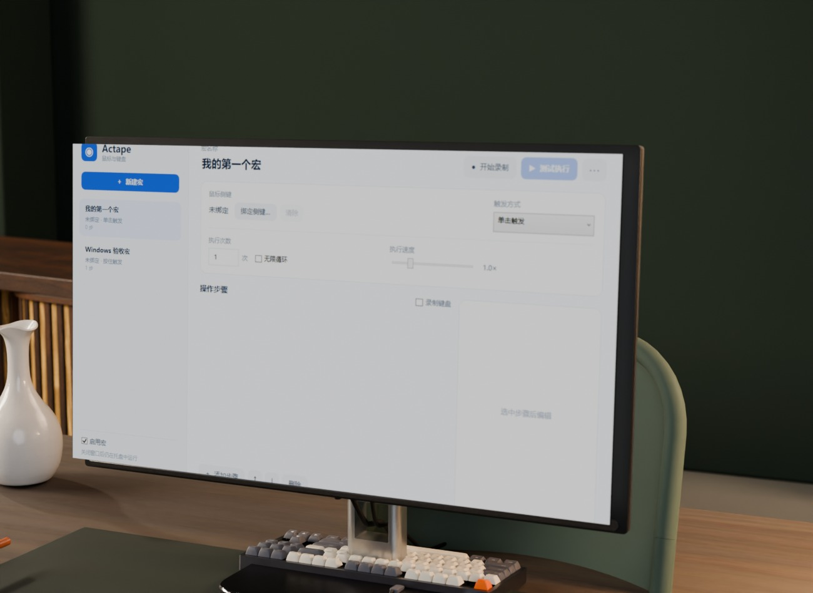
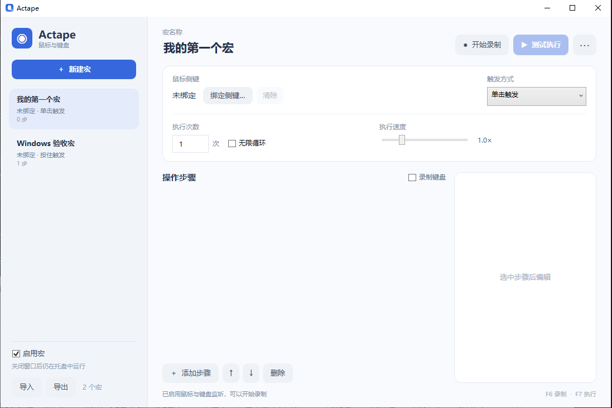

Actape
把重复的鼠标与键盘操作，变成可录制、可编辑、可复用的工作流程。

Product.
Actape 从日常高频重复操作出发，聚焦轻量、直观的鼠标键盘自动化。无需沉重的企业级 RPA，也能录制、编辑并按自己的节奏回放操作。
从问题定义、跨端交互设计到独立开发与版本发布，是一次完整的产品实践。
- 面向 macOS 与 Windows 的本地桌面应用
- 操作录制、步骤编辑、触发配置与回放
- 项目源码与发布记录公开可查

把重复的鼠标与键盘操作，变成可录制、可编辑、可复用的工作流程。

Actape 从日常高频重复操作出发，聚焦轻量、直观的鼠标键盘自动化。无需沉重的企业级 RPA，也能录制、编辑并按自己的节奏回放操作。
从问题定义、跨端交互设计到独立开发与版本发布，是一次完整的产品实践。
